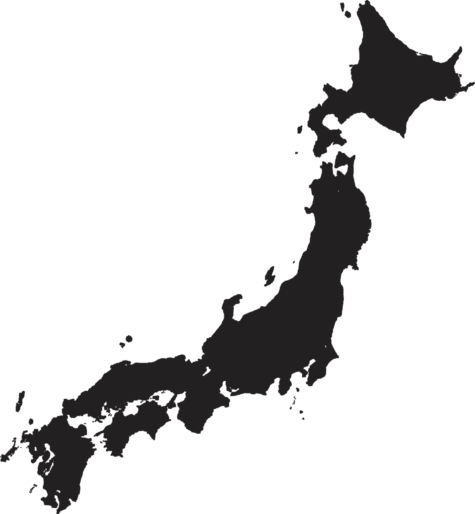

About
Friendliest
Meet
Event
Quiz
FAQ
Photo
Contact
Meet Capybara in Japan
Capybaras come to Japan during the 1960s over 50 years, is a popular animal in Japan.

Izu Shaboten Zoo
伊豆シャボテン動物公園
1317-13 Futo, Itō, Shizuoka, Japan
https://izushaboten.com/
Saitama Children's Zoo
埼玉こども動物自然公園
554 Iwadono, Higashimatsuyama, Saitama, Japan
https://www.parks.or.jp/sczoo/
Nasu Animal Kingdom
那須どうぶつ王国
1042-1 Oshima, Nasu, Nasu District, Tochigi, Japan
http://www.nasu-oukoku.com/
NAGA Bio Park
長崎バイオパーク
2291-1 Seihicho Nakayamago, Saikai, Nagasaki, Japan
http://www.biopark.co.jp/
Ishikawa Zoo
いしかわ動物園
600 Tokusanmachi, Nomi, Ishikawa, Japan
https://www.ishikawazoo.jp/